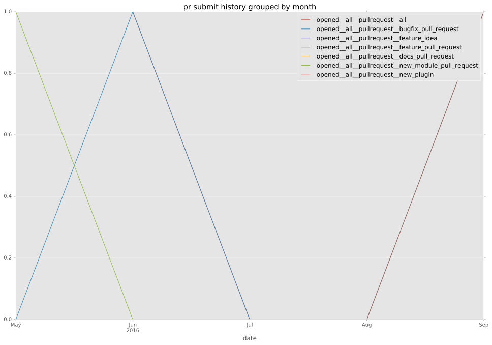

authors
maintainers
- bendoh
contributors
- bendoh : 151 commits
- ryansb : 5 commits
total issue counts
feature pull request: 1
docs report: 1
pullrequest: 4
bugfix pull request: 2
feature idea: 1
issue: 6
new plugin: 1
bug report: 4
issue history
pullrequest history



days open by issue type
bugfix pull request
count: 4
std: 16.7431578065
min: 6
max: 35
median: 20.5
mean: 20.5
all
count: 9
std: 27.8662480032
min: 0
max: 68
median: 35.0
mean: 29.5555555556
pullrequest
count: 0
std: nan
min: nan
max: nan
median: nan
mean: nan
docs report
count: 0
std: nan
min: nan
max: nan
median: nan
mean: nan
feature pull request
count: 0
std: nan
min: nan
max: nan
median: nan
mean: nan
feature idea
count: 1
std: nan
min: 48
max: 48
median: 48.0
mean: 48.0
issue
count: 0
std: nan
min: nan
max: nan
median: nan
mean: nan
new plugin
count: 2
std: 0.0
min: 68
max: 68
median: 68.0
mean: 68.0
bug report
count: 2
std: 0.0
min: 0
max: 0
median: 0.0
mean: 0.0
closures grouped by total days open